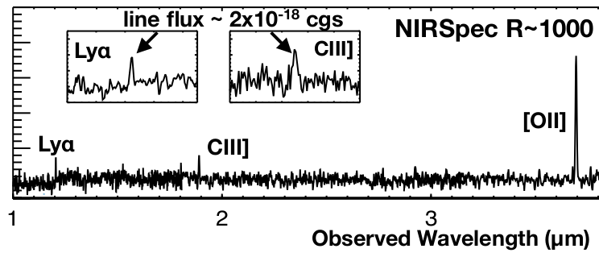
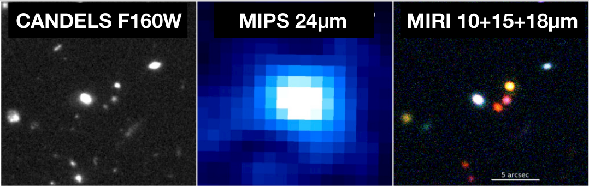

Simulated CEERS NIRSpec R~1000 of a candidate z=8.91 EGS galaxy
What are the limits on the epoch of first galaxy formation? The goals are to push the search for primordial star-formation into the first 400 Myr after the Big Bang. To provide insightful JWST tests of reionization-era galaxy-formation models via robust number counts of z>10 candidates and robust stellar mass estimates at z>4. To advance our understanding of the end of reionization via rest-optical line redshifts and Lyα measurements of a large sample of known high-redshift candidates.
Galaxy Assembly

HST/WFC3, Spitzer/MIPS, and mock CEERS MIRI images in the EGS
Between z~7 and today, galaxies underwent dramatic transformations. They formed stars from their ISM, continuously building their stellar populations, reaching peak activity at z~1–3 (Madau & Dickinson 2014), and enhancing their metal and dust content. Their central supermassive black holes (SMBHs) grew, leading to a relationship between SMBH and stellar mass. This growth was accompanied by changes in the physical structures of galaxies as they grew their disks and became increasingly bulge-dominated. Galaxies also grew through mergers, further enhancing star formation and black hole growth, while driving morphological changes. CEERS has been designed to enable a wide range of studies into these interrelated processes of galaxy assembly. Here we describe some avenues of research, which will lead to understanding the key evolutionary pathways that have built-up today’s galaxies.